본 보고서는 Moon Market의 판매 현황을 세일즈 및 마케팅 관점에서 분석한 결과입니다. 2024년 1월부터 6월까지의 판매 데이터를 기반으로 시간별/기간별 판매 트렌드, 제품 카테고리별 성능, 마케팅 활동과 매출 간의 상관관계, 그리고 인구통계학적 분석을 수행했습니다.
주요 발견사항으로는 5월에 가장 높은 매출(3,622,530원)과 성장률(32.1%)을 기록했으나, 6월에는 큰 폭으로 하락(-29.2%)했습니다. 과일 카테고리가 전체 매출의 45.1%를 차지하며 가장 높은 비중을 보이고, 30대(33.8%)와 50대(24.7%)가 주요 고객층입니다. 또한 SPRING24, EARLY5, SUMMERFRUIT 프로모션이 가장 효과적인 것으로 나타났습니다.
Moon Market의 2024년 1월부터 6월까지의 판매 트렌드를 분석한 결과, 월별 및 주별로 다양한 패턴이 관찰되었습니다.
1.1 월별 판매 트렌드

그림 1. Moon Market 월별 판매 트렌드 및 성장률
월별 판매 트렌드를 살펴보면, 5월에 3,622,530원으로 가장 높은 매출을 기록했으며, 전월 대비 32.1%의 높은 성장률을 보였습니다. 그러나 6월에는 2,564,740원으로 매출이 급격히 하락(-29.2%)했습니다. 1월부터 4월까지는 비교적 안정적인 매출 추이를 보였습니다.
1.2 월별 주문 건수 및 평균 주문 금액

그림 2. Moon Market 월별 주문 건수 및 평균 주문 금액
월별 주문 건수는 5월에 259건으로 가장 많았으며, 평균 주문 금액은 13,085원~14,753원 사이로 비교적 안정적인 추이를 보였습니다. 이는 고객들의 구매 패턴이 일정하게 유지되고 있음을 시사합니다.
1.3 주별 판매 트렌드
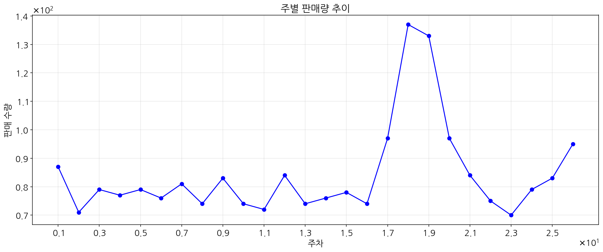
그림 3. Moon Market 주별 판매 트렌드
주별 판매 트렌드를 분석한 결과, 18주차(5월 초)에 944,580원, 19주차에 920,480원으로 가장 높은 매출을 기록했습니다. 이는 5월 초에 진행된 프로모션과 계절적 요인이 영향을 미친 것으로 보입니다.
Moon Market에서 판매되는 제품은 과일, 채소, 유제품 세 가지 카테고리로 구분됩니다. 각 카테고리별 성능을 분석한 결과는 다음과 같습니다.
2.1 카테고리별 매출 비중
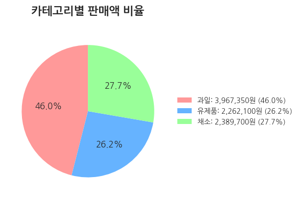
그림 4. Moon Market 카테고리별 매출 비중
과일 카테고리가 전체 매출의 45.1%를 차지하며 가장 높은 비중을 보였고, 채소(27.7%)와 유제품(27.2%) 카테고리가 비슷한 비중으로 뒤를 이었습니다. 이는 Moon Market 고객들이 신선한 과일에 대한 선호도가 높음을 시사합니다.
2.2 카테고리별 주요 지표 비교
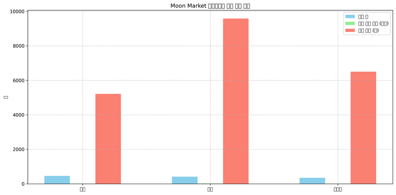
그림 5. Moon Market 카테고리별 주요 지표 비교
카테고리별 주요 지표를 비교한 결과, 과일 카테고리의 평균 주문 금액(18,496원)과 평균 단가(9,583원)가 다른 카테고리보다 높게 나타났습니다. 이는 과일 카테고리의 제품이 상대적으로 고가이며, 고객들이 품질 좋은 과일에 더 많은 비용을 지불할 의향이 있음을 보여줍니다.
2.3 카테고리별 연령대 분포
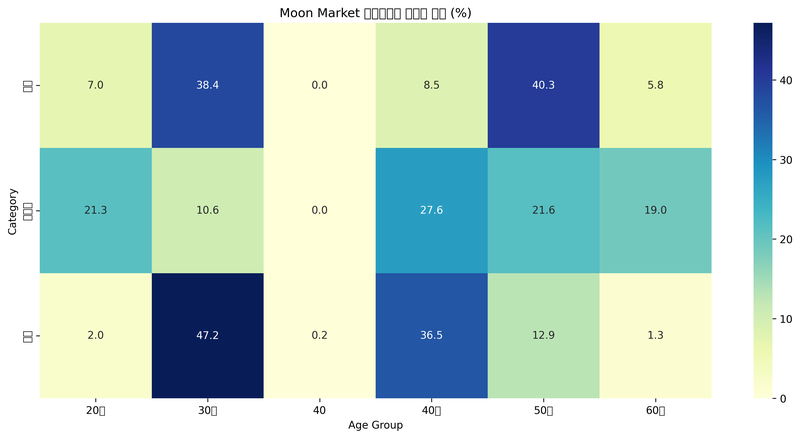
그림 6. Moon Market 카테고리별 연령대 분포 (%)
카테고리별 연령대 분포를 분석한 결과, 과일은 50대(40.3%)와 30대(38.4%), 유제품은 40대(27.6%)와 50대(21.6%), 채소는 30대(47.2%)와 40대(36.5%)가 주요 소비층으로 나타났습니다. 이러한 정보는 연령대별 맞춤형 마케팅 전략 수립에 활용할 수 있습니다.
Moon Market에서 진행한 다양한 프로모션과 매출 간의 상관관계를 분석하여 효과적인 마케팅 전략을 도출했습니다.
3.1 프로모션별 매출 비중
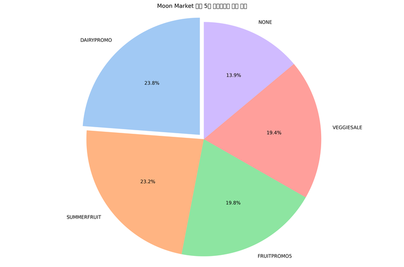
그림 7. Moon Market 상위 5개 프로모션별 매출 비중
상위 3개 프로모션(DAIRYPROMO, SUMMERFRUIT, FRUITPROMO5)이 전체 매출의 54%를 차지하는 것으로 나타났습니다. 특히 DAIRYPROMO가 27.3%로 가장 높은 비중을 차지했으며, SUMMERFRUIT(16.7%)와 FRUITPROMO5(10.1%)가 뒤를 이었습니다.
3.2 프로모션별 효과성
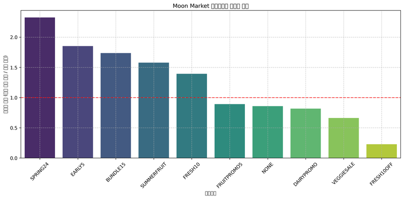
그림 8. Moon Market 프로모션별 효과성 지표
프로모션별 효과성을 분석한 결과, SPRING24(1.76), EARLY5(1.54), SUMMERFRUIT(1.51) 순으로 효과적인 것으로 나타났습니다. 효과성 지표는 프로모션별 평균 주문 금액을 전체 평균 주문 금액으로 나눈 값으로, 1보다 크면 평균보다 효과적임을 의미합니다.
3.3 상위 프로모션의 연령대별 분포
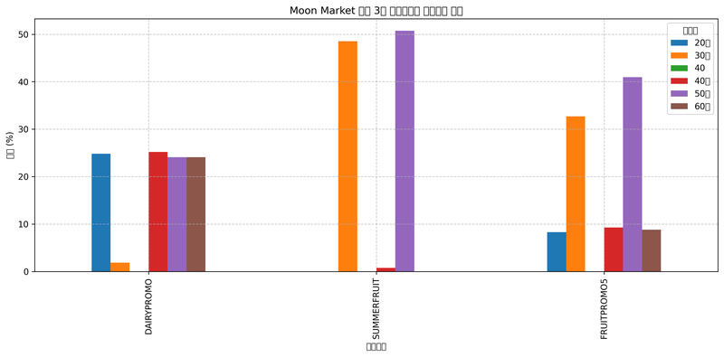
그림 9. Moon Market 상위 3개 프로모션의 연령대별 분포
상위 3개 프로모션의 연령대별 분포를 분석한 결과, SUMMERFRUIT는 50대와 30대, FRUITPROMO5는 50대와 30대, DAIRYPROMO는 40대와 50대가 주요 타겟층으로 나타났습니다. 이는 각 프로모션이 특정 연령대에 더 효과적임을 보여줍니다.
Moon Market 고객의 성별, 연령대, 지역별 특성을 분석하여 고객 프로필을 파악했습니다.
4.1 성별 분석
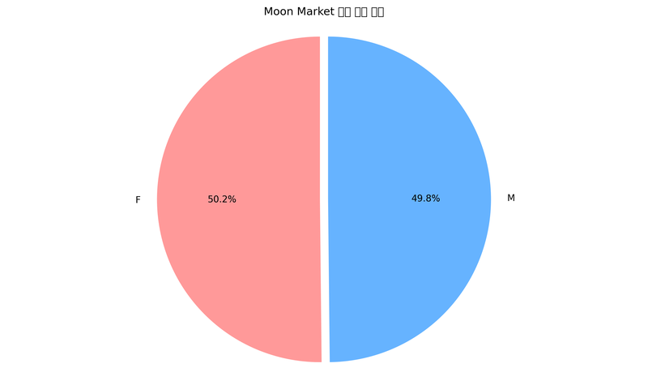
그림 10. Moon Market 성별 주문 비율
성별 분석 결과, 여성(50.2%)과 남성(49.8%)의 주문 비율은 비슷하게 나타났습니다. 그러나 평균 주문 금액은 남성(18,952원)이 여성(8,822원)보다 2배 이상 높게 나타났습니다. 이는 남성 고객이 상대적으로 고가의 제품을 선호하거나 대량 구매하는 경향이 있음을 시사합니다.
4.2 연령대별 분석
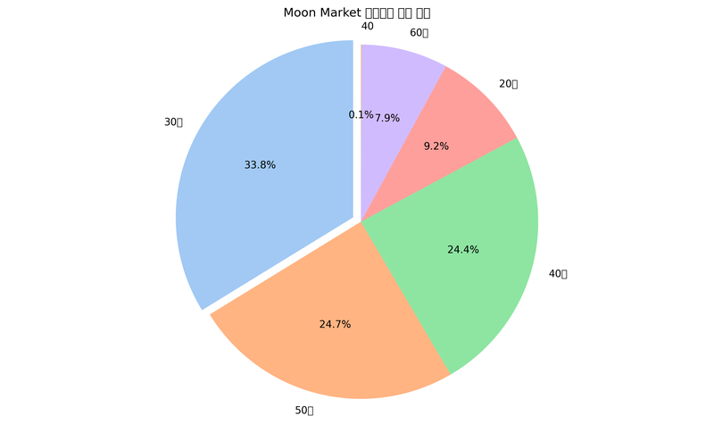
그림 11. Moon Market 연령대별 주문 비율
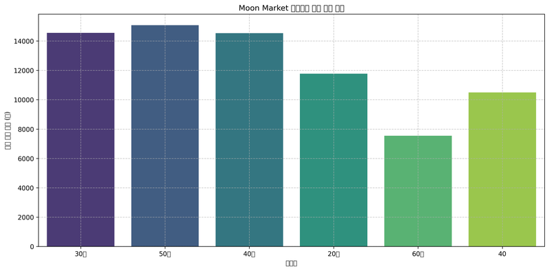
그림 12. Moon Market 연령대별 평균 주문 금액
연령대별 분석 결과, 30대(33.8%), 50대(24.7%), 40대(24.4%), 20대(9.2%), 60대(7.9%) 순으로 주문 비율이 높게 나타났습니다. 평균 주문 금액은 50대가 가장 높고, 60대가 가장 낮았습니다. 이는 30~50대가 Moon Market의 핵심 고객층임을 보여줍니다.
4.3 지역별 분석
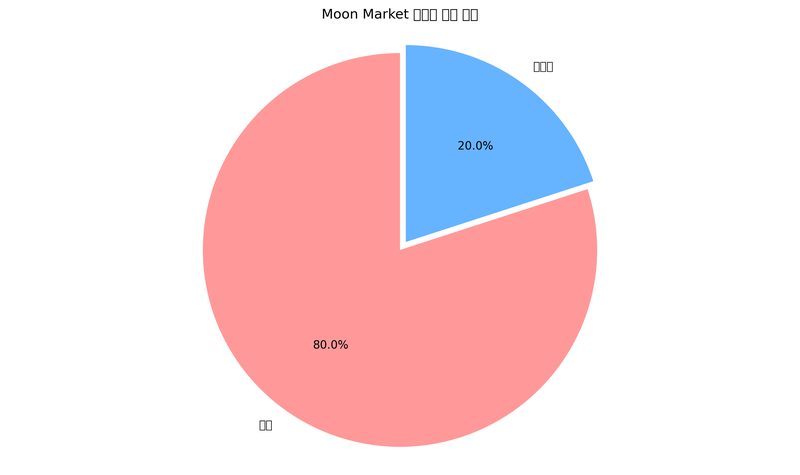
그림 13. Moon Market 지역별 주문 비율
지역별 분석 결과, 서울(80.0%)이 경기도(20.0%)보다 주문 비율이 4배 높게 나타났습니다. 그러나 평균 주문 금액은 경기도(18,352원)가 서울(12,750원)보다 높게 나타났습니다. 이는 경기도 지역 고객의 구매력이 상대적으로 높음을 시사합니다.
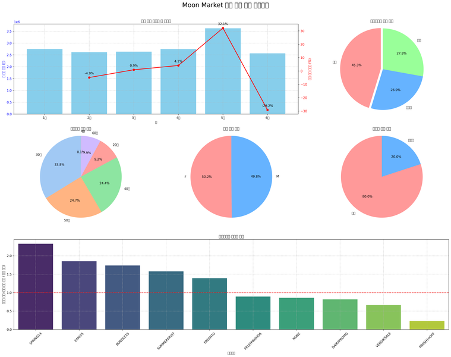
그림 14. Moon Market 판매 현황 종합 대시보드
위 대시보드는 Moon Market의 판매 현황을 종합적으로 보여줍니다. 월별 판매 트렌드, 카테고리별 매출 비중, 연령대별/성별/지역별 주문 비율, 그리고 프로모션별 효과성을 한눈에 파악할 수 있습니다.